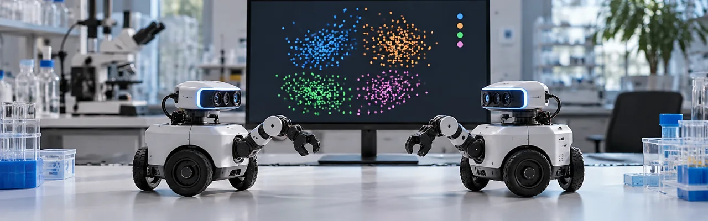

Forskere ved Vrije Universiteit Brussel og Universitetet i Namur kjørte store simuleringer med autonome agenter som ikke hadde noen delt ordbok og ingen sentral koordinator, og så dem bli enige om et konsekvent navnesystem for det de observerte, forankret i selve dataene og ikke lånt fra menneskelig tekst, testet på 37 offentlig tilgjengelige datasett. Det er langt fra en chatbot, publisert i tidsskriftet Transactions of the Association for Computational Linguistics, men det er et ekte skritt mot maskiner som kan beskrive det de registrerer for hverandre, ikke bare gjenta ord en modell allerede kjenner.
Kilde: aclanthology.org →Google, Google DeepMind og MIT FutureTech kombinerte en undersøkelse av 637 forskere i USA og Storbritannia med en oversikt over tusenvis av spesialiserte vitenskaps-AI-modeller, og fant at rundt 80 % av dem som svarte sier at laboratoriets produksjon har økt de siste tre årene, mens AI gir dem tilbake nesten en hel arbeidsdag de fleste uker. Rapporten er ærlig om grensene også: nesten halvparten av forskerne sa at AI skyver dem mot tryggere, gradvise prosjekter i stedet for de mest risikable åpne spørsmålene.
Kilde: hpcwire.com →Biohubs Virtual Biology Initiative har vokst til et samlet beløp på 1,8 milliarder dollar etter at det amerikanske energidepartementet og helseinstituttet NIH ble med, og Google DeepMind, Isomorphic Labs og Meta bidrar til sammen med 300 millioner dollar, alt med mål om å bygge åpne, standardiserte biologiske data som prediktive AI-modeller faktisk kan lære av. Målet er en "virtuell celle" som kan forutsi hvordan en celle reagerer på et medikament eller et miljø i endring: et forskningsverktøy, ikke et ferdig produkt, med et første delt datasett forventet innen rundt et år.
Kilde: eurekalert.org →